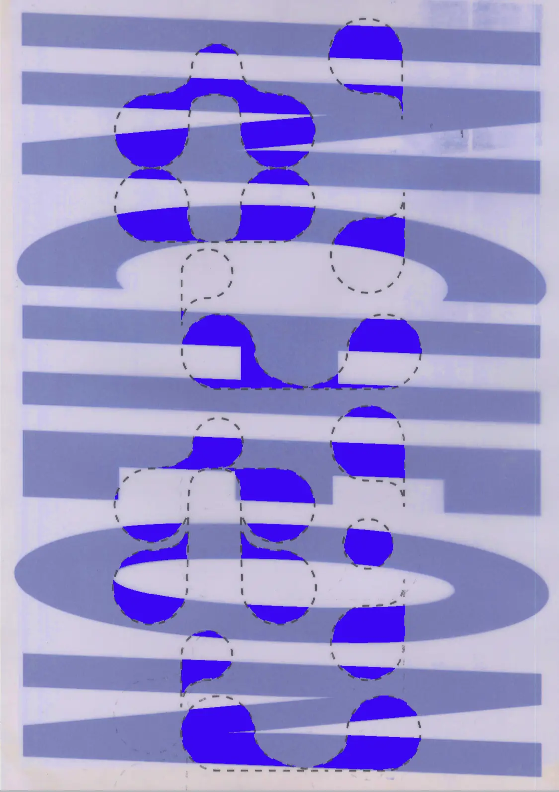
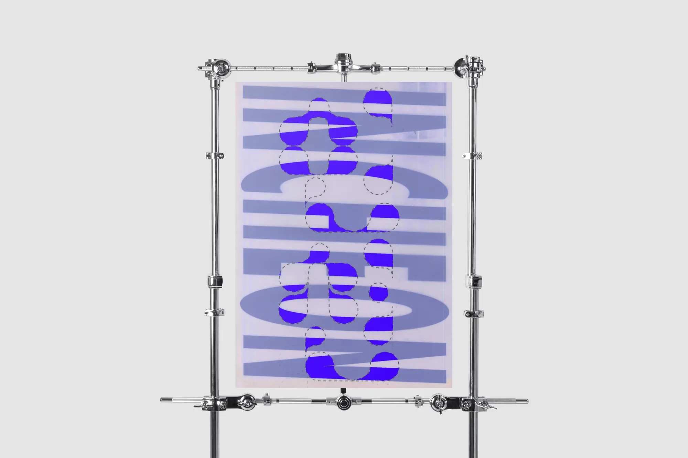
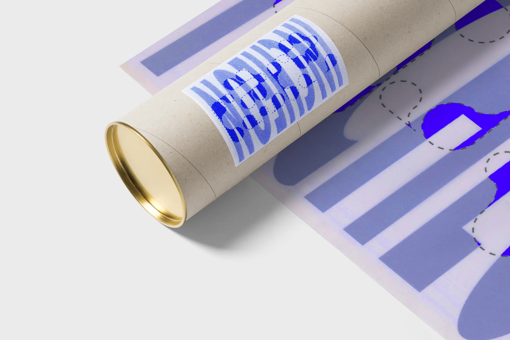

인천INCHEON

인천 도시 브랜딩의 시도로 타이포그래피 포스터를 디자인했습니다. 인천하면 떠오르는 바다와 하늘의 쾌청한 푸른색을 담아내 보았습니다. 이 포스터는 인천 송도 컨벤시아 그랜드볼룸에서 공개, 전시했습니다.



인천 도시 브랜딩의 시도로 타이포그래피 포스터를 디자인했습니다. 인천하면 떠오르는 바다와 하늘의 쾌청한 푸른색을 담아내 보았습니다. 이 포스터는 인천 송도 컨벤시아 그랜드볼룸에서 공개, 전시했습니다.

